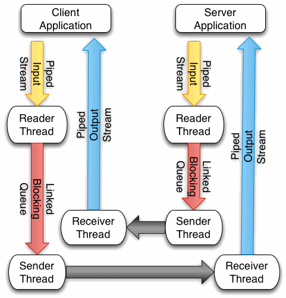

UDP does not implement reliable data transfer. Packets may be lost over a UDP connection. In this assignment you are to implement the transport layer of TCP using the GoBackN protocol described in the book. To implement this I suggest you use a design as shown in the figure below.

I am providing you with a testing application called GoBackNTest.java. This test application contains the code for both the Client Application in the picture above and the Server Application.In that code they are called the ClientThread and the ServerThread respectively. The test appplication begins by opening a TCP connection between the client and server. Then a few pleasantries are exchanged by sending a few short strings back and forth. Once it is determined that those strings transfer successfully, then the declaration of independence is sent from the client to the server. Your final test is to be sure that got sent correctly. If you are on a Linux machine, you can use the diff command to make sure that the client and server copies of the declaration of independence are exactly the same. I am providing you with the text in the file independence.txt.
Do to the complex nature of bit manipulation in Java (Java wants to make everything signed when possible) I am also providing you with a class called Segment.java that handles encoding and decoding the segment bytes to be sent through your UDP connection. Finally, when sending a segment through a UDP connection you might have packet loss but you would never have a checksum error because UDP computes a checksum and discards packets that have checksum errors. To simulate a real Network Layer I am providing you with an Injector class that will take care of the actual sending of segments through a UDP connection. The injector will allow you to control what percentage of the time you have packet loss and checksum errors. You must use this Injector class in your implementation, but you may set the percentages to zero while doing your initial testing. At some point you must test your protocol to be sure it recovers from packet loss and checksum errors MOST of the time (some errors may be non-recoverable, like losing the initial SYN packet). However, to simplify the project a little bit you do not need to use your Injector object to send packets during the handshaking process.
A socket operates asynchronously from the Application that creates it. That means that the socket is running in a thread or threads and is doing its work independently of whether the application is waiting on data being sent or received. The communication between the application and the socket takes place via streams. The socket provides two streams, an input stream which is where the application reads data from the other side, and an output stream where the application writes data to be transferred to the other side.
I am recommending that your socket consist of three threads: a Reader Thread, a Sender Thread, and a Receiver Thread. Each of the sections below describe the responsibilities of these threads in implementing the Go-Back-N protocol.
When the socket is first created it must go through the handshaking process to establish a connection with the other side. To do that you will need to write two classes, a MySocket.java class and a MyServerSocket.java class. These two classes must establish a connection through the MyServerSocket accept method, go through the handshaking process of TCP which results in two MySocket applications talking to each other. For an details of how this works from the application's point of view, see the GoBackNTest.java file.
Both sockets must maintain sequence numbers during the communication process between the two sides. The sequence number is always the index of the next byte of available data to be sent (or index of the next packet of available data - depending on how you chose to implement your sequence number counting.
When an acknowledgment number comes back, it is always the index of the first byte of expected data (the index of the first byte that will be sent next). By maintaining the sequence number for a socket you can always communicate the information about where this segment or packet appears in the overall order of packets. Of course, these sequence numbers start with a random value.
The Reader Thread's purpose is to read from the Application's output stream and make segments from the data that it finds there. Once the connection is established, the reader thread reads the available data, packaging each piece in a segment and leaves that segment on a queue of segments to be sent by the sender thread.
To read from the Application's output stream it works nicely to create a PipedInputStream over the Application's output stream to read the data from the application. After creating the segment, it works nicely to place it on a LinkedBlockingQueue. A blocking queue blocks (suspends) the current thread when nothing is available to be taken from the queue. The proper method to use is the take method. This will be revisited in the Sender thread in a moment.
The read method of the PipedInputStream returns the number of bytes read. If -1 is returned, then the PipedInputStream has been closed. In this way, you can detect when the Reader Thread should terminate. Terminate the Reader thread by first putting a FIN packet in the sender's queue. If the application's output stream is closed it was closed as a result of the close method being called on the socket.
The Sender Thread operates by first checking to see if a segment can be sent to the other side. This will be true if less than N segments are currently unacknowledged. The exact implementation of the sender thread will depend on how you wish to do things. However, here are a list of things you may wish to do in your sender thread:
Finally, when you send a packet you might add that packet to another queue, which I called the ackQueue, that keeps track of the unacknowledged segments. You need to keep these segments around someplace in case they need to be retransmitted.
When packets are sent to the other side they should be sent with the Injector object. This Injector object may inject a checksum error or it may choose to not end the packet.
The Receiver Thread is the most complex of the threads in the socket. It operates by receiving packets from the other side (through the UDP socket) while the connection is not closed. Each time a packet is received it must consult the current state of the connection to determine which action to take.
When any packet is received, there will be an acknowledgement number in the segment. If this packet has the ACK bit set, then the Receiver Thread should remove all packets from the ackQueue that have a sequence number that is less than the acknowledgement number. If some packets are removed from this queue, then the acknowledgement timer should be reset.
Then, depending on the current state of the connection, the receiver thread may do one of several things.
The following text describes how the connection should be closed. When the close method is called on the socket, you can close both the input and output stream of the socket. Closing the output stream (the out stream) of the socket will result in the ReaderThread getting a length of -1 from the read method call. This is your indication that the close has been initiated. Your ReaderThread should then create a FIN packet and place it in the sendQueue. The Sender Thread should look at the packet it is sending and if that packet is a FIN packet it should enter the first state of closing the conneciton. Once the FIN packet is sent, the close handshaking is initiated.
I am providing you with a tool to help you debug your multi-threaded code. This tool will display a flow diagram for you of data flow within your application. The code is in this tar file. If you are at Luther College this package is already installed. If you are installing it yourself, you will likely need the transfig package installed on your system. Specifically, the srms2pdf command is dependent on the fig2dev program being installed. It is also dependent on ghostscript being installed and the acroread PDF viewer (the Acrobat Reader application). The tar file contains a sample srmsexample file. To use this tool you can type
srms2pdf srmsexample
Invoking this command will pop up a PDF file containing a dataflow diagram. If you have your program produce an output file (print to System.out and copy it to a file) with a format like srmsexample, you can use this tool to display the dataflow between the various threads of your program. While there is some extra effort involved in printing debug statements using this format, the dataflow pictures can be very helpful.